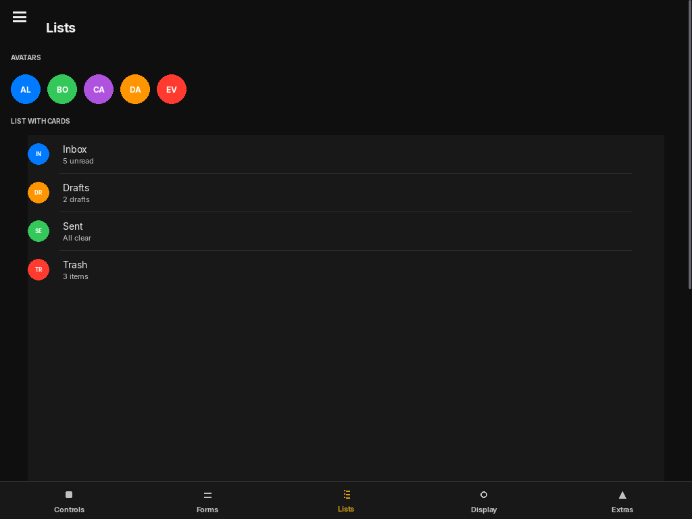

Layouts & Router
Container elements that position and scroll their children, plus the animated page router.

FloatLayout
The standard container. Children position themselves using their own anchor/x/y/width/height specs relative to this container's bounds. Optionally renders a card-style background with rounded corners and a border.
FloatLayout(
anchor="top_left", x=0, y=0, width=1.0, height=1.0,
background_color=None,
border_radius=12,
border_width=0,
border_color=None,
padding=0,
)| Parameter | Default | Description |
|---|---|---|
| background_color | None | Fill color as pygame.Color. None = transparent (no fill drawn). |
| border_radius | 12 | Corner radius in pixels for the background fill. |
| border_width | 0 | Stroke width. 0 = no border drawn. |
| padding | 0 | Inset all children by this many pixels on every side. |
from pylay import FloatLayout, Button, Label, iOSTheme
# Card panel with themed background
card = FloatLayout(
anchor="center", x=0, y=0, width=0.6, height=0.5,
background_color=iOSTheme.secondary_background,
border_radius=16,
border_width=1,
border_color=iOSTheme.fill,
padding=20,
)
card.add_child(Label("Card content", anchor="top_center", x=0, y=0, width=1.0, height=40))VStack
Stacks visible children vertically in order with a uniform gap. Automatically adds spring-physics scrolling if the total children height exceeds the container. The most commonly used layout in PyLay.
VStack(
spacing=10,
padding=15,
anchor="top_left", x=0, y=0, width=1.0, height=1.0,
)| Parameter | Default | Description |
|---|---|---|
| spacing | 10 | Pixel gap between consecutive visible children. |
| padding | 15 | Inset applied to all four sides before laying out children. |
Layout (the scrollable base). If the total child height exceeds the VStack's own height, a scrollbar appears and mouse-wheel scrolling is enabled automatically.PageRouter
A multi-screen router with physics-based slide transitions. Pages are defined as builder functions that return a UIElement. Only the currently active page is instantiated at any time.
PageRouter(
pages: dict[str, Callable[[], UIElement]] | None = None,
initial_page="",
anchor="top_left", x=0, y=0, width=1.0, height=1.0,
)Transition to a named page. direction: "right" (forward), "left" (backward), "auto" (inferred from registry order). animated=False = instant swap.
Rebuild the current page with a cross-dissolve + scale animation. Use when a global change (theme, language) requires the page to re-render from scratch.
Rebuild the active page. delay > 0 defers the rebuild to let running spring animations finish first.
from pylay import App, PageRouter, VStack, Label, Button
app = App("App", 1024, 768)
def home():
v = VStack(padding=32, anchor="top_left", x=0, y=0, width=1.0, height=1.0)
v.add_child(Label("Home", font_size=28, bold=True,
anchor="top_left", x=0, y=0, width=1.0, height=48))
v.add_child(Button("Settings →",
on_click=lambda: router.navigate("settings"),
anchor="top_left", x=0, y=0, width=180, height=44))
return v
def settings():
v = VStack(padding=32, anchor="top_left", x=0, y=0, width=1.0, height=1.0)
v.add_child(Label("Settings", font_size=28, bold=True,
anchor="top_left", x=0, y=0, width=1.0, height=48))
v.add_child(Button("← Back",
on_click=lambda: router.navigate("home"),
anchor="top_left", x=0, y=0, width=120, height=44))
return v
router = PageRouter({"home": home, "settings": settings}, initial_page="home",
anchor="top_left", x=0, y=0, width=1.0, height=1.0)
app.set_root(router)
router.navigate("home")
app.run()SidebarDrawer
A slide-in side panel that animates in from the left edge over the main content. Typically toggled by a HamburgerButton. See Advanced Widgets for the HamburgerButton reference.
from pylay import SidebarDrawer, HamburgerButton, State
drawer_open = State(False)
drawer = SidebarDrawer(
open_state=drawer_open,
width=240,
# add children to drawer.content
)
hamburger = HamburgerButton(
open_state=drawer_open,
on_toggle=lambda v: drawer_open.set(v),
anchor="top_left", x=16, y=16, width=40, height=40,
)
app.root.add_child(drawer)
app.root.add_child(hamburger)